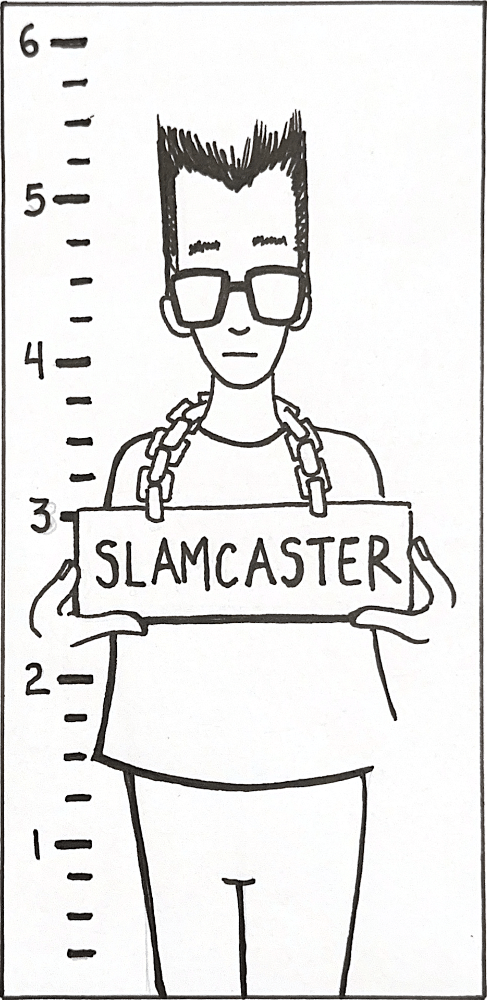

About Vinnie
Vinnie Amadeo was born and raised in Iowa, where his early love for drawing and storytelling first took root. Now incarcerated at California State Prison, Los Angeles County, Vinnie continues to create, using comics as his primary medium of expression. His work offers an unfiltered glimpse into life behind bars—capturing the emotional, social, and human complexities of incarceration with striking honesty and artistic depth. Through bold illustrations and raw narratives, Vinnie invites readers to see prison not just as a place, but as a lived experience shaped by struggle, resilience, and hope. His comics are deeply personal yet universally resonant, reflecting a voice that refuses to be silenced. Slamcaster serves as a platform for Vinnie to share that voice, one panel at a time, with the outside world.

